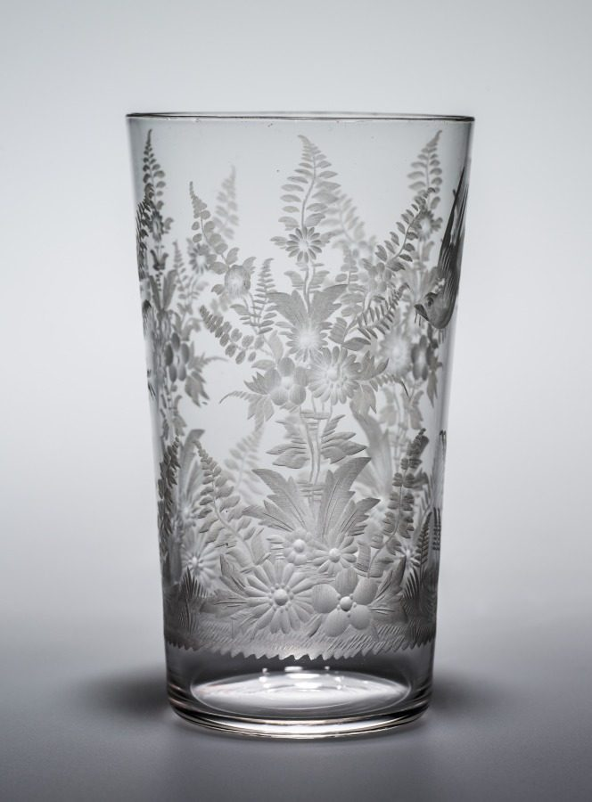
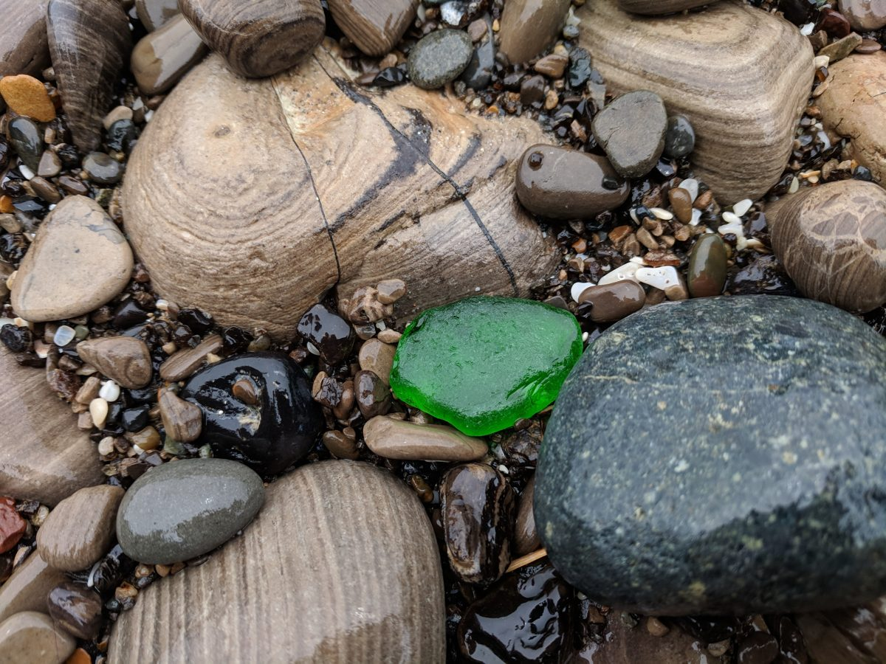
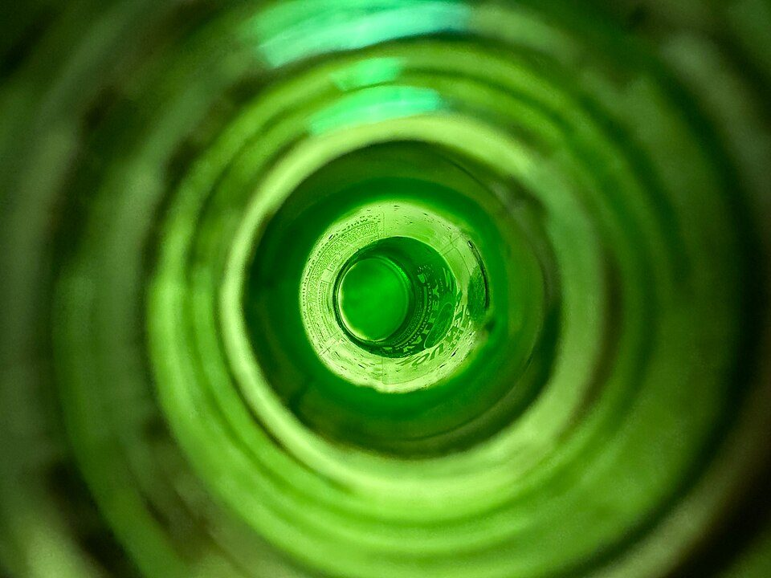

3mm
店のこと
お店について確認できているのは、所在地・電話番号・Instagramのアカウントだけです。
「想像してみる」部分は、制作側が想像して書いたものです。お店の実際の様子・考え・メニューとは関係がありません。
確認できていること
- 店名は「びーどろはうす」、業種はカフェ
- 所在地は兵庫県加西市北条町東高室78-1(〒675-2321)
- 電話番号は 0790-43-1445(Googleマップ記載)
- Instagramは @vidorohouse
- 営業時間・定休日・メニュー・価格・ご予約・駐車場は準備中

想像してみる
「びーどろ」という名前から
由来は分かりません。制作側は、透きとおった素材のイメージから、軽やかで明るい雰囲気のお店かもしれない、と想像しました(実際のお店の姿ではありません)。

